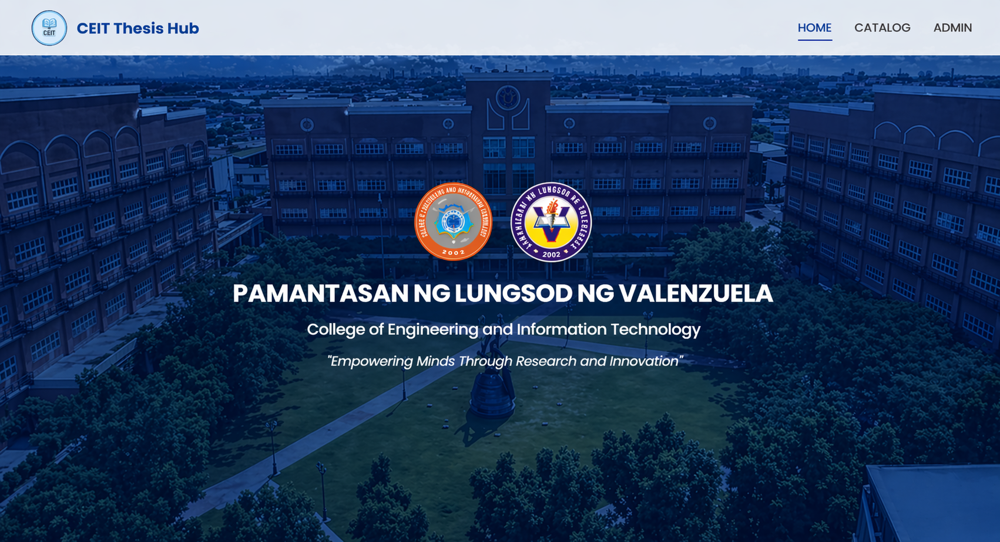

CEIT Thesis Hub
Web-Based Thesis Catalog / PLV CEIT Library
CEIT Thesis Hub Digital Thesis Catalog
2025
Frontend & Backend Developer
Thesis Search / Archive Management
CEIT Thesis Hub is a web-based digital thesis catalog built for the PLV CEIT Library. The goal was to make archived research easier to search, browse, and manage by turning scattered records into a clearer academic reference system for students, faculty, and administrators.
Introduction
CEIT Thesis Hub was designed to give the library a single digital place for organizing thesis records. Instead of depending on manual lookup and physical browsing alone, the platform lets users search by title, author, year, and keywords while giving administrators a more structured way to maintain the catalog.
Featured Screen
The main catalog screen was designed around clarity first. Thesis records are surfaced in a way that helps students discover relevant work faster, while still giving the library a more organized and maintainable archive.

Core Modules
The system was shaped around a few practical needs: help users discover research quickly, surface the right thesis details, and make archive management simpler for the people maintaining the collection.
Module 01
Search thesis titles
Let users quickly find research through keywords instead of relying on manual shelf browsing alone.
Module 02
Browse by category
Organize the archive by course, year, and topic so the catalog feels easier to scan and narrower to explore.
Module 03
Open thesis details
Surface metadata, authorship, and other key information clearly before a user requests or references the material.
Module 04
Add new records
Give administrators a structured way to register incoming theses and keep the archive growing cleanly.
Module 05
Update archive entries
Make it easier to correct metadata, refine records, and keep the catalog accurate over time.
Maintain a reliable archive
The end goal was a library tool that stays useful daily for both academic discovery and archive upkeep.
Lessons Learned
Clear structure improves discoverability
Users move faster when the archive is organized around the way they actually search: by title, year, topic, and familiar academic cues.
Metadata matters as much as visuals
A catalog is only useful when the records are complete. Searchability depends on consistent fields, clear labeling, and dependable data entry.
Admin flows need the same care
The system is not just for viewers of research. The people maintaining the archive need clean workflows too, or the catalog becomes harder to trust.
Screen 01
Make the archive easy to scan
The first priority was readability. The catalog needed to feel approachable to students while still presenting enough academic context to make search results useful.


Screen 02
Surface thesis details clearly
Once a user finds a relevant record, the next job is clarity. This view helps them understand what the thesis is, who authored it, and why it belongs in their research path.
Screen 03
Keep admin management straightforward
The catalog becomes sustainable only when adding and maintaining records is simple. This part of the system focused on reducing friction for the people updating the library's collection.